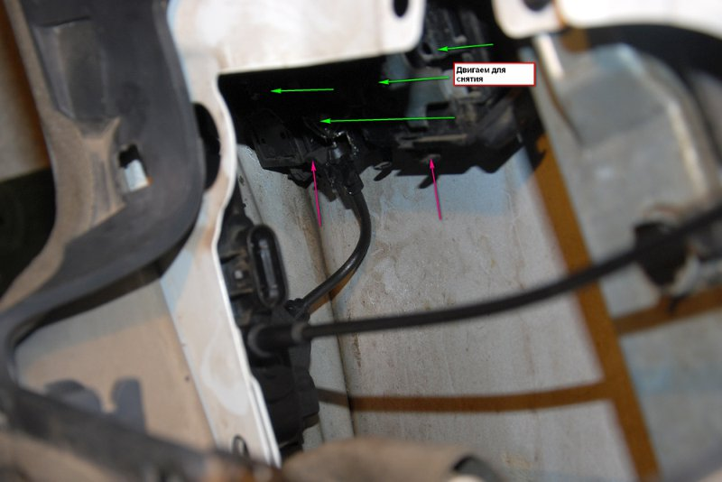
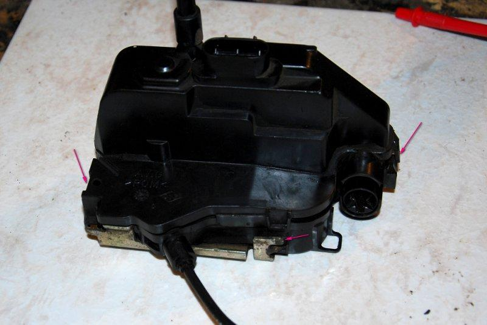

До 22,11,2012г все было четко без никаких глюков,утром поехал в райцентр и после остановки двигателя и снятия карточки с картоприемника заметил одну непонятную вещь: не выкл.печка,мафон,габариты и ближний свет,при открытие левой передней двери не горит индикатор открытых дверей и не сопровождается звуковыми сигналами.Закрыл машину и ушел по делам,а когда вернулся открыл,сел и ждал свою родню,через пару десяток сек. слышу щелчок и машина закрылась,тут вспомнил про МАСЯНЮ http://megane2.ru/forum/showthread.php?t=13028&highlight=%EF%EE%E1%E5%E4%E0+%CC%C0%D1%DF%CD%C8
Думал что это связано с обнулением БК(как раз совпало),но не то,пробовал активировать и дезактивировать функцию блокирования дверей во время движения,снял АКБ,проверил все преды-результат тот же.
Вчера было принято решение прозвонить провода в дверном проеме,в гофре и патом если что идти дальше,а то начитался разных коментов на разных форумов и конкретно что меня интересовало не нашел.
На последнем фото,контакты на разъеме(слево направо) -1 и 2 это микрик,3 и 4 на эл.двигатель.
Для начала открутил эти 3 болтика,снял кнопки с/подъемников и приподнял дверную обшивку.
Приступил к прозвонке проводов,от замка к гофре,результат положительный-обрывов не было.
Было принято все таки снять замок: Снял заглушку,подготовил из проволочки на 3мм крючок и приступил,отодвинул планочку крючком и снял мех.замок и ручку наружную.
дальше,отстегнул тросик от внутреней ручки
откручиваем
отодвигаем согласно зеленых стрелок и вытаскиваем замок

отстегиваем тросик и то что указано красными стрелками
Приступаем к разборке самого электро замка,отщелкиваем пару защелок

труднее снять и поставить этот тросик обратно при сборке
И тут картинка суперская,все в пыли,грязь накопленая за все время эксплуатации.Присмотрелся ко всем деталям,к принципу работы и ничего такого чтоб указывало на паломку не обнаружил.
Достал флакончик с чистящим средством и почистил весь замок и в таком разобраном виде подключил к авто,завел и патом заглушил-тоже самое что и было,без никаках либо изминений.
Тогда нажал чуть-чуть на планочку раздался сигнал и свет выключился,стало понятно что к чему,экспериментировал дальше,что меняется в замке при закрытом и открытом положениях.
В конце концов был вынесен вердикт-планочка из за ее дефеката не вкл.микрик,просто не достает(протерлась),первая мысля была или его сделать(замок,планочку) или другой замок.
Пока грелся пояльник,еще осматривал сье творение и вот,пояльником чуть нарастил выступ на планочке чтоб достала микрик,наложил немножко смазки.

После сборки и подключения на свое родное место результат суперположительный-все работает,дорожное испытание провел сегодня-без глюков!!!
Вся сборка в обратном порядке!!!